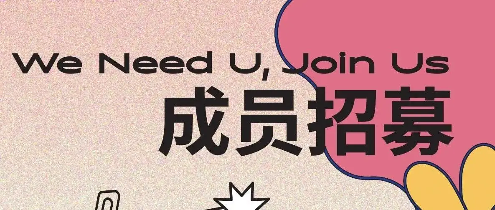
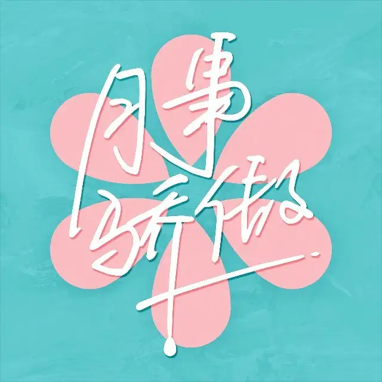
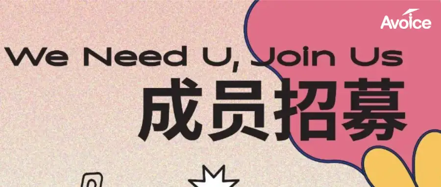
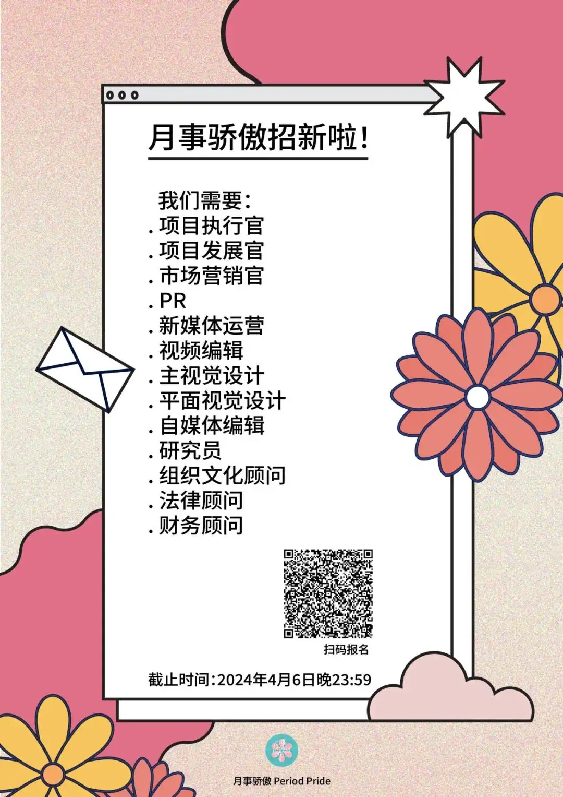
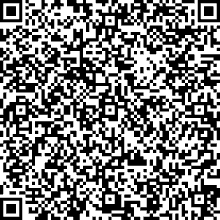
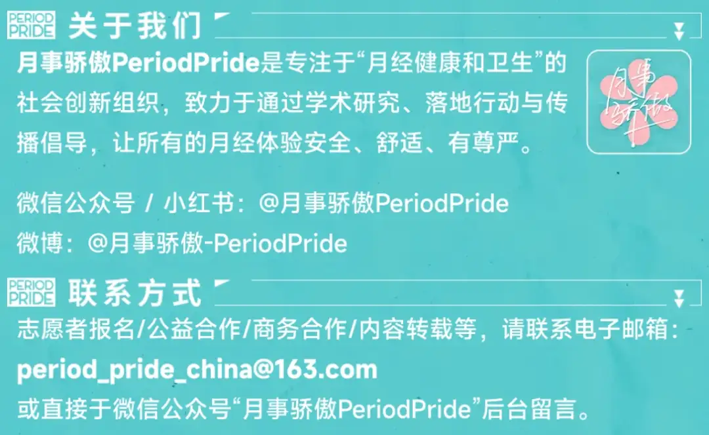

以下文章来源于月事骄傲PeriodPride ，作者月事骄傲

专注于“月经健康和卫生”的社会创新组织，让所有的月经体验安全、舒适、有尊严。



嗨，看到这里的你，幸会；或者，又见面啦！
也许，我们是认识不久的新朋——刚刚过去的妇女节，月事骄傲和小红书合作了【有点毛病，也没关系】女性健康倡导，也举办了【人类小毛病图鉴】原创活动。
也许，我们已是相伴已久的老友——2020年9月9日，月事骄傲发出第一条推送：联合发声 | 关于“月经”，我想为妇女儿童发展纲要建言。
不管我们是什么时间、因为什么相识，都想向你再一次介绍自己，以及更重要的：月事骄傲要招新啦！
这里有一份通往“向往的世界”的邀请函，你，愿意和我们同行吗？
关于我们
月事骄傲PeriodPride是专注于“月经健康和卫生”的社会创新组织，致力于通过学术研究、落地行动与倡议传播，让所有的月经体验安全、舒适、有尊严。
在过去的四年里，月事骄傲：
主导发起“呼吁经期用品免税或降税”倡议，获得超过3500万次响应。
长期开展 “儿童友好厕所计划”、灾情下经期用品捐赠 等公益项目。
志愿者们说：
月事骄傲，让我骄傲！
谢谢月事骄傲找到我，谢谢你的鼓励和认可，谢谢你喜欢我的课，带上我一起为孩子们尽一份力！！我也期待和你、和伙伴并肩前行的未来，祝我们健康平安，祝我们身心自在。
非常开心能够成为月事骄傲的一名志愿者，也很感谢月事骄傲给我那么多学习和实践的机会！
做热爱的事，毅力和韧性会自己生发出来～希望所有女生和‘月事骄傲’都越来越好！
如果你也像ta们一样：
⚧️ 关心女性/性别议题，对公益/社会创新有热忱；
❤️ 认可月事骄傲的理念，注重“同理心”和“关怀”的价值；
⛰️ 心态开放，热爱新事物，持续学习；
💪 每周愿意投入一定时间，靠谱、实干、不划水；
那么，别犹豫了，赶快加入我们吧！

请左右滑动，查看所有招新岗位↓
左右滑动，查看13岗位志愿者需求
其它说明:
以上工作无需坐班，原则上均可远程完成。常驻上海的伙伴有条件可线下共同办公；
以上工作为志愿者性质，我们会努力保证在项目条件允许时，为伙伴们提供公正的志愿者补贴；
每人最多可报名2个岗位，即“第一志愿”和“第二志愿”。
为什么值得参与？
📄 见证你的成绩：你的志愿服务会在月事骄傲公开平台上获得署名，并为你提供专属的志愿者证书/实习证明/社会实践证明等；
🎖️ 为你提供机会： 月事骄傲链接推荐的机会，包括但不限于论坛和会议发言、理论与技能培训、工作内推、升学推荐信、资源链接等；
👭 做有价值的事：为性别平等/无贫困/可持续/社会创新等你相信的价值共同努力，让改变发生；
🙆 认识友善的人：在尊重ta人劳动、彼此关怀、共同成长的组织文化与工作氛围中，结识志同道合的伙伴。
报名方式
1. 扫描下方二维码 或 点击“阅读原文”，填写表单报名，此过程需20分钟左右。

2. 建议在报名表单最后上传简历及其它附件资料，如申请加入创意中心请务必上传视觉设计作品集。建议使用电脑浏览器打开表单并上传。
3. 报名截止时间：2024年4月6日晚23:59（北京时间）。填写完整并提交表单即为报名成功。
4. 如通过简历初筛，工作人员将会在报名成功后2周内通过邮件联系您，安排线上面试。面试时间预计在3月30日-4月12日之间，时长约25分钟。
5. 月事骄傲PeriodPride长期欢迎志同道合的伙伴加入。本次集中招新截止后，仍鼓励更多岗位的创意涌现。如有常规岗位的加入意愿或新增岗位的想法建议，欢迎发送简历及相关资料至人才中心邮箱：
感谢你看到最后！还记得这篇文章的标题是什么吗？
——有什么事值得做48年？
有人说，达成一项社会变革至少要48年。
对于月事骄傲来说，性别平等就是我们希望看到的改变，也是我们为之奋斗的愿景，即使需要的时间不止48年。
希望到那时，我们的孙女孙子会认为“月经贫困”“月经羞耻”完全是天方夜谭——那就意味着，我们的使命已经完成。
当然，大概率来说，你不需要真的在月事骄傲做48年志愿（当然，如果真的发生，也是一件很棒的事😛）
但我们坚定地相信，在这里交汇的每一个你，都会以自己的步调，在不同的界别中耕耘前进。我们的努力一定能连点成线，绘出性别平等、有着良好健康与福祉、优质教育、无贫穷的浩渺星图。
如果你愿意，就让今天，成为我们“半个世纪之约”的第一天吧。
文案｜Zudy
编校｜Eve
排版｜Dujuan

点击“阅读原文”，报名加入月事骄傲核心成员团队